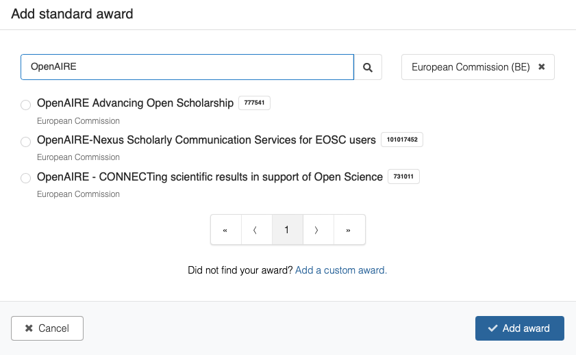

This section provides a comprehensive overview over new features launched on October 13th, 2023 with links to user documentation on how to use these new features.
Our communities feature now has support for multiple members. Members can have one of four different roles:
Members can be invited from Zenodo's users. By end of the year, we'll also support that members can be invited by email. Members can publicly show or hide their membership of the community as they see fit.
New submissions to a community now by default goes through our new community review feature.
The review feature is optional and you can still publish your record immediately by not submitting it to a community (e.g. if it's declined by the community curator). After the record is published you can also still request to have it included in multiple communities.
As briefly described in the Members-section, curators are now able to edit the metadata of published records. Similarly, curators can during reviews edit both the metadata and files of the records submitted by the uploader to the community.
Modification of files in published records still has to go through the Zenodo support line (we have a 1-month grace period in which we allow addition/removal/modificaiton of files after which modifications are only exceptionally granted).
Note, that there's a transition period of 6 months for records submitted prior to Oct 13, 2023 in which these records will not be editable by curators. See details in what's changed
Records part of a community will now show community branding in the header. Records that are part of multiple communities can choose which community should be the branded community.
Communities can now have a profile which allows you to link your community to related grants and organisations. You can further change curation policy settings to determine if community members are subject to reviews or not.
You're now able to preview an record before publishing it:
We have significantly improved the sharing capabilities in the new Zenodo (see communities and sharing sections). This means that we have changed the previous open, embargoed, restricted and closed access right mode into a single visibility setting that can be either:
We've significantly improved our creators/contributors fields. Creators can now be auto-completed from ORCID, and affiliations can be auto-completed from ROR. We've also split the full name into a family name and given names fields to improve the reliability of our automatic citation generation. Organisational names are also supported as creators.
We've improved our license selector to provide better defaults as well as improved search capabilities. In addition we've also added support for adding multiple licenses, as well as custom rights statements.
Our funding selector has also been improved in a similar way to the license selector. We've also extended the support so you can link to grants not yet available in our award database.

You can now select which file by default should be previewed on the record landing page.
We've further added support for imprecise dates via the Extended Date Time Format syntax (level 0). This is important e.g. for older content where you may not know a precise date, but only the month, year or range of years.
Examples of imprecise dates:
2023-09 - The month of September 2023.2023 - The year of 2023.2013/2023 - The time range between 2013 and 2023.
Our new subjects feature has been improved. We'll in the coming months be importing domain-specific vocabularies so records can be tagged with terms from e.g. Medical Subject Headings (MeSH).
Our new community features support sharing of many records among members of a community. We've also improved the sharing of just a single record. You're now able to create a secret link to your record that you can send to a collaborator. The link can give permissions to either:
You access the new feature via the Share button on the record landing page:
This will allow you to create and manage the secret links:
We also improved our previous access request feature, to enable both users and guests to request access.
You'll notice e.g. on My dashboard that users now has a new profile which includes:
For instance:
Under the profile preferences you can set your profile and email visibility, which determines whether or not people can invite you to communities and what they'll be able to see. It is currently not yet possible to change the avatar which is automatically generated.
The setting defaults to public profile visibility but with hidden email visibility.
The new quick actions menu makes it easy to start new uploads or create communities:
We added a new My dashboard which provides easy access to all your content on Zenodo:
The record landing page now has a button to download all files in one go.
We have overall made many improvements to the Web Accessibility (A11y) of Zenodo. We are still working on reaching full level AA compliance with the W3C Web Content Accessibility Guidelines (WCAG) and will announce it as soon as we make it.
You're now able to login to Zenodo with your institutional account if your institution is part of eduGAIN. The new service is provided via the OpenAIRE AAI which also provide access to EOSC Core services (European Open Science Cloud).
We now have support for DataCite JSON v4.3 and upgraded the DataCite XML to v4.3. This is in addition to our already supported export formats: JSON, JSON-LD (Schema.org), Citation Style Language JSON (CSL), Dublin Core, MARCXML, BibTeX, DCAT and GeoJSON.
Under the hood, Zenodo is now driven by a powerful and heavily expanded REST API. You can find the documentation to the new REST API on the InvenioRDM reference pages.